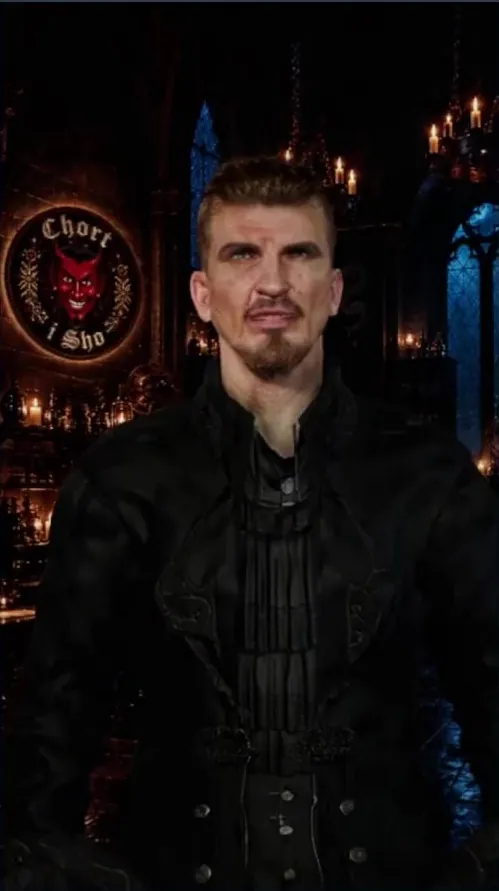
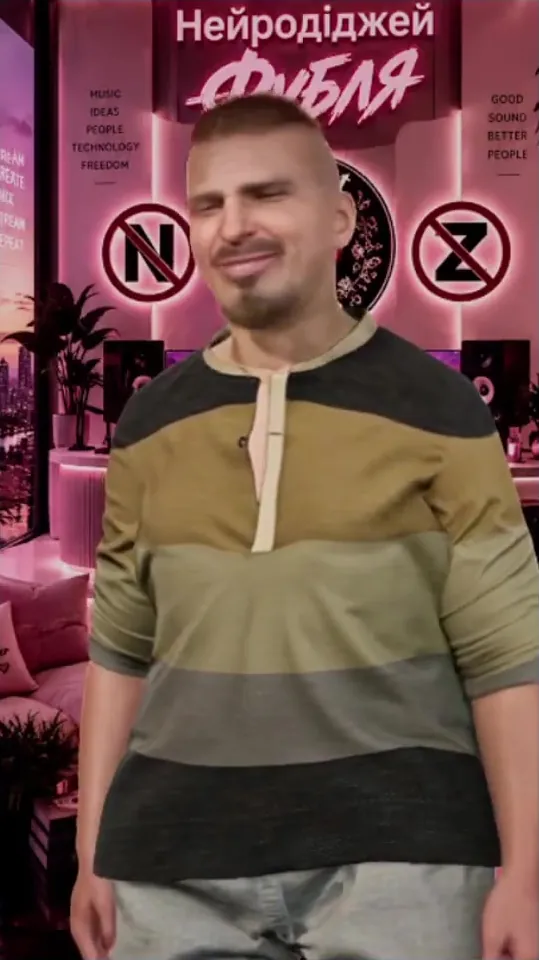
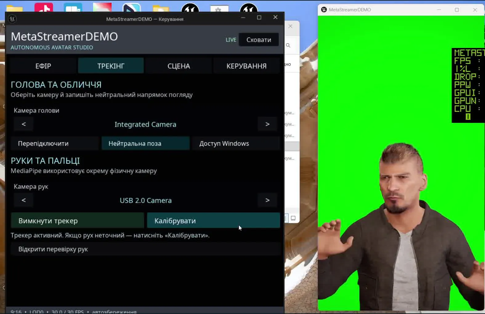
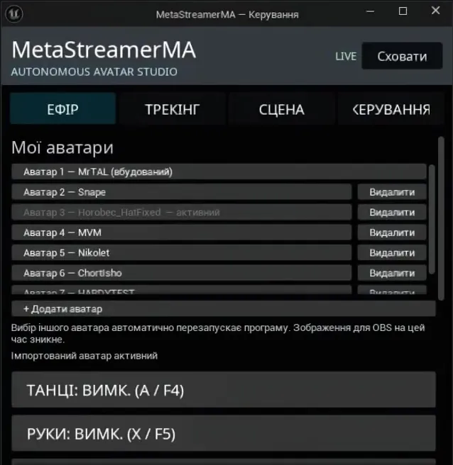
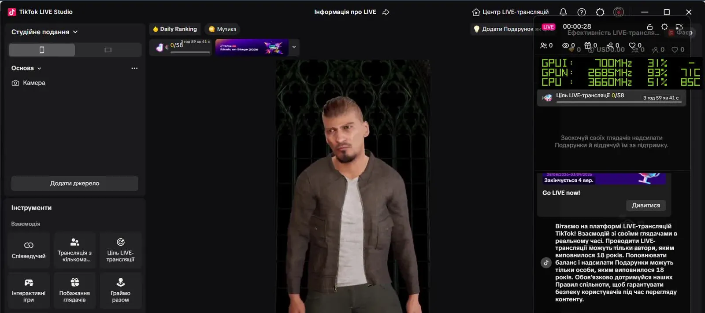

MetaStreamer
Автономна студія аватара в реальному часі для Windows. Ви говорите й рухаєтесь, а в ефірі живе цифровий ведучий MetaHuman: міміка, погляд і руки.An autonomous real-time avatar studio for Windows. You talk and move, and a MetaHuman digital host comes alive on air: expressions, gaze and hands.
Ви наживо. Аватар у кадрі.You are live. The avatar is on screen.
Не всі хочуть показувати своє обличчя в ефірі, а мультяшний VTuber не підходить для серйозного образу. MetaStreamer дає реалістичного персонажа, який повторює вашу міміку та жести в реальному часі.Not everyone wants to show their face on stream, and a cartoon VTuber doesn't fit a serious image. MetaStreamer gives you a realistic character that mirrors your expressions and gestures in real time.
Ваша присутність, новий образ. Для авторів, музикантів, креативних команд і брендів.Your presence, a new look. For creators, musicians, creative teams and brands.



Реальні кадри із застосунку та записів ефіру.Real frames from the app and stream recordings.
Усе для ефіру в одному застосункуEverything for the stream in one app
Готова збірка працює окремо: відкривати Unreal Engine для ефіру не потрібно.The finished build runs on its own: no need to open Unreal Engine to go live.
Голова й обличчяHead and face
Вбудована вебкамера передає аватару міміку, погляд і повороти голови.The built-in webcam drives the avatar's expressions, gaze and head turns.
Руки й пальціHands and fingers
Окрема камера та MediaPipe відстежують кисті й пальці, з калібруванням.A separate camera and MediaPipe track hands and fingers, with calibration.
Фон і хромакейBackground and chroma key
Перемикання між хромакеєм та імпортованими фонами прямо під час ефіру.Switch between chroma key and imported backgrounds right during the stream.
Чистий вихід 9:16Clean 9:16 output
Вертикальне вікно для захоплення в TikTok LIVE Studio або OBS.A vertical window for capture in TikTok LIVE Studio or OBS.
Бібліотека аватарівAvatar library
Персонаж готується в окремому архіві й імпортується з перевірками та безпечним виправленням.A character is prepared as a separate archive and imported with checks and safe fixes.
Локально на ПКRuns locally
Рух обробляється на вашому комп'ютері, без хмари. Інтерфейс мовою Windows.Motion is processed on your own PC, no cloud. The UI follows the Windows language.
Пульт ведучогоThe host's console
Вкладки Ефір, Трекінг, Сцена й Керування. Знято з робочої збірки.Tabs for Live, Tracking, Scene and Control. Captured from the working build.




Від персонажа до ефіру за чотири крокиFrom character to live in four steps
ПерсонажCharacter
MetaHuman готується в Unreal Engine й пакується в окремий архів.A MetaHuman is prepared in Unreal Engine and packed into a separate archive.
ІмпортImport
Архів додається в MetaStreamer. Застосунок перевіряє його і виправляє безпечно.The archive is added to MetaStreamer. The app checks it and applies safe fixes.
КамериCameras
Вебкамера для обличчя, друга камера для рук. Одне натискання для калібрування.A webcam for the face, a second camera for the hands. One click to calibrate.
ЕфірGo live
Чистий вихід 9:16 захоплюється в TikTok LIVE Studio або OBS.The clean 9:16 output is captured in TikTok LIVE Studio or OBS.
* За моїм тестовим стрімом. Працює на доступному споживчому залізі.* From my own test stream. Runs on accessible consumer hardware.
Подивіться, як це виглядає наживоSee how it looks live
Робоче демо · YouTubeWorking demo · YouTube
Презентація · YouTubePresentation · YouTube
Наступний крок: автострімNext step: auto-streaming
Підключити до аватара голос і діалог, щоб він міг відповідати на повідомлення чату, а ведучий зберігав контроль над ефіром.Connect voice and dialogue to the avatar so it can answer chat messages, while the host keeps control of the stream.
Голос і діалогVoice and dialogue
Відповіді на чат від імені персонажа.Replies to chat in the character's voice.
Контроль ведучогоHost control
Людина завжди може взяти ефір на себе.A person can always take over the stream.
Колекції персонажівCharacter collections
Готові образи, у перспективі разом із правовласниками.Ready-made looks, potentially together with rights holders.
Ваш персонажYour character
Унікальне обличчя для автора чи бренду.A unique face for a creator or a brand.
Хочете свого цифрового ведучого?Want your own digital host?
Напишіть, якщо цікавить MetaStreamer для вашого каналу, бренду чи студії.Write to me if you want MetaStreamer for your channel, brand or studio.